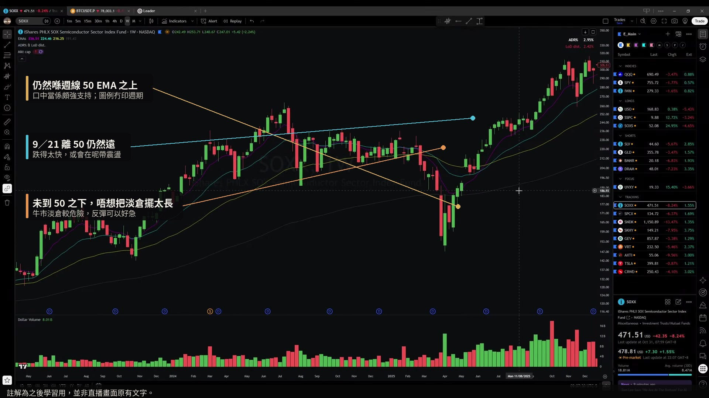

概要
未跌破週線 50，就未係擺長淡倉嘅最好時機
有人問，既然覺得 AI 名稱可能開始較長跌勢，會唔會把現有倉位擺得更長。佢說不會。第一，淡倉比做多危險，因為市場多數時間在牛市，反彈或者再出一段升勢嘅機會，往往高過出現又長又穩嘅跌勢。第二，而家仍然在週線 50 EMA 之上，佢當呢度係頗強支持；9 同 21 離 50 仍然遠，所以呢段跌可能太快、太急，之後或會在 50 同 9／21 之間震盪。回睇歷史，較容易把淡倉持有較長嘅，係已經跌破週線 50 之後嘅段落。
圖一 · 主圖
仍然喺週線 50 之上，未想把淡倉擺太長
直播 55:50

原話
I think I won't do it. First because I'm doing the shorts. I think shorts are like more dangerous than the longs, as the market is in a bull market most of the time. So the odds of getting a bounce, or maybe of getting another uptrend, could be higher than the odds of getting like a long and sustainable downtrend. And another reason is we're now still above the weekly 50 EMA. To me I think it's a pretty strong support, and given that the 9 and 21 is still quite far away from the 50, so probably this dip is going to be definitely a little bit too strong, like too fast, and I think we could get a chop or like some range bound, maybe between the 50 and the 9 and 21. So I don't think it's a really good timing to swing trade the shorts. If you just look back and see when will be the best time to hold the shorts for longer, it's probably like under the 50 EMA.
我想我唔會咁做。第一，因為我而家做緊淡，淡倉比做多危險，市場多數時間都在牛市。所以出現反彈、或者再出一段升勢嘅機會，可能高過出現又長又穩嘅跌勢。另一個原因係，我哋而家仍然在週線 50 EMA 之上。對我嚟講呢度係頗強嘅支持；而且 9 同 21 離 50 仍然好遠，所以呢段跌很可能有少少太急、太快，之後或會震盪、或者在 50 同 9、21 之間上落。所以我唔覺得而家係把淡倉擺長嘅好時機。若你回睇幾時先最好把淡倉持有較長，大概係已經在 50 EMA 之下。
點樣讀
兩個理由要分開：一係牛市裡淡倉本身較危險；二係位置上還在週線 50 之上，9／21 離 50 仍遠，跌得太快之後或會震盪。
圖例冇印週期。註解只跟口中嘅 50、9、21 同均線位置來讀。呢啲唔係叫人用同一條規則去複製。
附註
注意事項
- 中間有一段關於算法交易嘅問答，冇讀圖，唔單獨成科。
- 圖例冇印均線週期。畫面睇唔到成交價或者倉位。
免責聲明：呢份係教育拆解，唔係投資建議，亦唔好當作買賣指示。